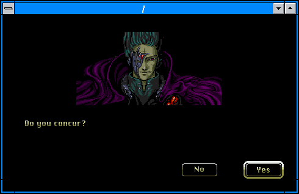
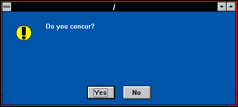
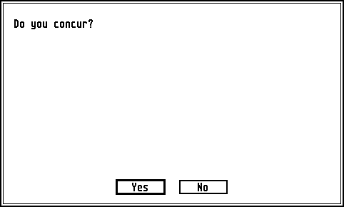
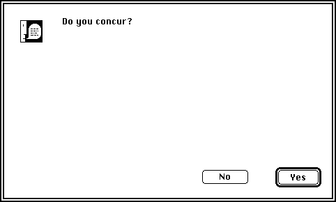
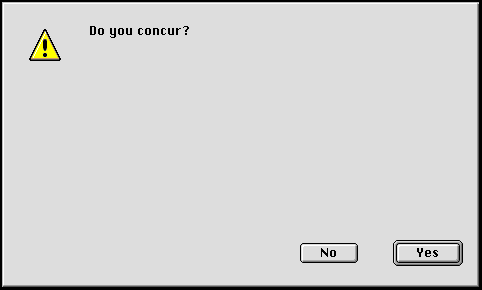
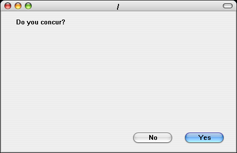

HOT DOG Linux
How To Show A Confirmation Dialog
From the shell, run the command:$ hotdog confirm OK Cancel "Are you sure?"
The second argument contains the text for the OK button.
If the second argument is omitted, then the default text for the OK button is 'OK', and the dialog text is read from STDIN.
$ echo "Are you sure?" | hotdog confirm
The third argument contains the text for the Cancel button.
If the third argument is omitted, then the default text for the Cancel button is 'Cancel', and the dialog text is read from STDIN.
$ echo "Do you concur?" | hotdog confirm Yes
The fourth argument contains the text for the dialog.
If the fourth argument is omitted, then the dialog text is read from STDIN.
$ echo "Do you concur?" | hotdog confirm Yes No
The style of dialog will be determined by the environment variable HOTDOG_MODE.
To force a dialog to be in a specific style:
$ HOTDOG_MODE="winmac" hotdog confirm Yes No "Do you concur?"

$ HOTDOG_MODE="hotdogstand" hotdog confirm Yes No "Do you concur?"

$ HOTDOG_MODE="amiga" hotdog confirm Yes No "Do you concur?"

$ HOTDOG_MODE="atarist" hotdog confirm Yes No "Do you concur?"

$ HOTDOG_MODE="macclassic" hotdog confirm Yes No "Do you concur?" $ HOTDOG_MODE="maccolor" hotdog confirm Yes No "Do you concur?"

$ HOTDOG_MODE="macplatinum" hotdog confirm Yes No "Do you concur?"

$ HOTDOG_MODE="aqua" hotdog confirm Yes No "Do you concur?"

If the user clicks the OK button, then that text will be written to STDOUT followed by a newline, and the exit code will be 0.
If the user clicks the Cancel button, then nothing will be written to STDOUT, and the exit code will be 0.
If the user closes the dialog, possibly by clicking the window close button or hitting the Escape key, then nothing will be written to STDOUT, and the exit code will be 1.